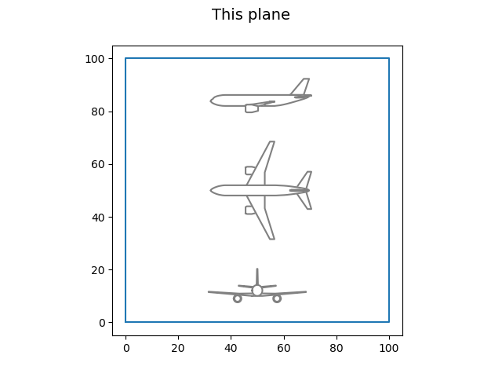

Classic MDA¶
This file comes from GitHub repository examples/AIAA_2019/classic_mda_1.py
First import your packages:
from marilib.tools import units as unit
from marilib.aircraft_model.airplane import viewer as show
from marilib.aircraft_data.aircraft_description import Aircraft
from marilib.processes import assembly as run
Then initialize the architecture:
propulsive_architecture = "TF" # TF:turbofan, PTE1:partial turboelectric 1
number_of_engine = 2
aircraft = Aircraft()
n_pax_ref = 150
design_range = unit.m_NM(3000)
cruise_mach = 0.7
run.aircraft_initialize(aircraft, n_pax_ref, design_range, cruise_mach, propulsive_architecture, number_of_engine)
You can modify the initial values here:
aircraft.propulsion.reference_thrust = 119000.
aircraft.wing.area = 151.9
Then launch the MDA process. This sequence reproduces what is done by eval_mda0, eval_mda1 or eval_mda2 of process.assembly.py depending on the selection, resp. run.eval_mass_breakdown(…), run.eval_mass_estimation(…) or run.eval_mass_mission_adaptation(…)
Solve the geometric coupling between airframe and engines:
run.eval_aircraft_statistical_pre_design(aircraft)
Estimate all mass and CGs with or without Mass-Mission adaptation:
run.eval_mass_mission_adaptation(aircraft)
Calculate all airplane performances:
run.eval_performance_analysis(aircraft)
Handling quality analysis:
run.eval_handling_quality_analysis(aircraft)
Print some results:
print("-------------------------------------------")
print("Number of passengers = ","%.0f"%aircraft.cabin.n_pax_ref," int")
print("Design range = ","%.0f"%unit.NM_m(aircraft.design_driver.design_range)," NM")
print("Cruise Mach number = ","%.2f"%aircraft.design_driver.cruise_mach," Mach")
print("-------------------------------------------")
print("Reference thrust turbofan = ","%.0f"%aircraft.propulsion.reference_thrust," N")
print("Reference thrust effective = ","%.0f"%aircraft.propulsion.reference_thrust_effective," N")
print("Turbofan mass = ","%.0f"%aircraft.turbofan_nacelle.mass," kg")
print("Cruise SFC = ","%.4f"%(aircraft.propulsion.sfc_cruise_ref*36000)," kg/daN/h")
print("Cruise LoD = ","%.4f"%(aircraft.aerodynamics.cruise_lod_max)," no_dim")
print("-------------------------------------------")
print("Wing area = ","%.2f"%aircraft.wing.area," m2")
print("Wing span = ","%.2f"%aircraft.wing.span," m")
print("-------------------------------------------")
print("Wing position = ","%.2f"%aircraft.wing.x_root," m")
print("HTP area = ","%.2f"%aircraft.horizontal_tail.area," m2")
print("VTP area = ","%.2f"%aircraft.vertical_tail.area," m2")
print("-------------------------------------------")
print("Fuselage length = ","%.2f"%aircraft.fuselage.length," m")
print("Fuselage width = ","%.2f"%aircraft.fuselage.width," m")
print("-------------------------------------------")
print("MTOW = ","%.2f"%aircraft.weights.mtow," kg")
print("MLW = ","%.2f"%aircraft.weights.mlw," kg")
print("OWE = ","%.2f"%aircraft.weights.owe," kg")
print("MWE = ","%.2f"%aircraft.weights.mwe," kg")
print("-------------------------------------------")
print("Design range = ","%.0f"%unit.NM_m(aircraft.design_driver.design_range)," NM")
print("Effective nominal range = "+"%.0f"%unit.NM_m(aircraft.nominal_mission.range)+" NM")
print("")
print("Take off field length required = "+"%.0f"%aircraft.low_speed.req_tofl+" m")
print("Take off field length effective = "+"%.0f"%aircraft.low_speed.eff_tofl+" m")
print("")
print("Approach speed required= "+"%.1f"%unit.kt_mps(aircraft.low_speed.req_app_speed)+" kt")
print("Approach speed effective = "+"%.1f"%unit.kt_mps(aircraft.low_speed.eff_app_speed)+" kt")
print("")
print("One engine ceiling path required = "+"%.1f"%(aircraft.low_speed.req_oei_path*100)+" %")
print("One engine ceiling path effective = "+"%.1f"%(aircraft.low_speed.eff_oei_path*100)+" %")
print("")
print("Climb speed required in MCL rating = "+"%.1f"%unit.ftpmin_mps(aircraft.high_speed.req_vz_climb)+" ft/min")
print("Climb speed effective in MCL rating = "+"%.1f"%unit.ftpmin_mps(aircraft.high_speed.eff_vz_climb)+" ft/min")
print("")
print("Climb speed required in MCR rating = "+"%.1f"%unit.ftpmin_mps(aircraft.high_speed.req_vz_cruise)+" ft/min")
print("Climb speed effective in MCR rating = "+"%.1f"%unit.ftpmin_mps(aircraft.high_speed.eff_vz_cruise)+" ft/min")
print("")
print("Time to climb required = "+"%.1f"%unit.min_s(aircraft.high_speed.req_ttc)+" min")
print("Time to climb effective = "+"%.1f"%unit.min_s(aircraft.high_speed.eff_ttc)+" min")
print("-------------------------------------------")
print("Evaluation mission range = ","%.0f"%unit.NM_m(aircraft.cost_mission.range)," NM")
print("Evaluation mission block fuel = ","%.0f"%aircraft.cost_mission.block_fuel," kg")
print("Evaluation mission cash op cost = ","%.0f"%aircraft.economics.cash_operating_cost," $")
print("CO2 metric = ","%.4f"%(aircraft.environmental_impact.CO2_metric*1000)," kg/km/m0.48")
Plot the airplane in a 3D view:
show.draw_3d_view(aircraft,"Design example","This plane")
which gives the final output

Output of the MDA process¶